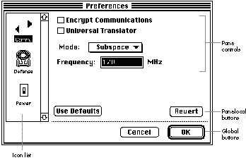
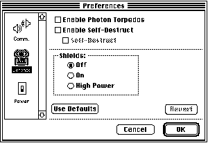

As applications grow in power and complexity, so does the tendency to present users
with numerous cluttered dialog boxes. To simplify the user interface, developers are
moving increasingly to dialogs with multiple panes. This article describes how to
implement multipane dialogs that users navigate by clicking in a scrolling list of
icons.
Dialog boxes with multiple panes ("pages" of controls) are an increasingly popular
element of the Macintosh user interface. Like simple dialogs, multipane dialogs can be
presented when users need to indicate preferences, set attributes of text or graphic
objects, or give specifications for complex operations such as searches or formatting,
among other things. By grouping related options and providing a single point of
interaction for manipulating them, multipane dialogs simplify life for the user and the
developer.
Five different kinds of controls for navigating multipane dialogs are in general use: the
scrolling list of icons, the pop-up menu, index tabs (simulating the look of tabs on the
tops of file folders in a file cabinet), Next/Previous buttons, and icon button sets.
Although there aren't any hard-and-fast rules about when you should use one over
another, these considerations (suggested by Elizabeth Moller of Apple's Human
Interface Design Center) generally apply:
The sample application MPDialogs on this issue's CD demonstrates the use of a
multipane preferences dialog navigated by clicking in a scrolling list of icons, similar
to the Control Panel in System 6 and print dialogs in QuickDraw GX. After describing
the user interface presented by this sample program, I'll go into the details of how to
implement a similar multipane dialog in your own application. Source code for the
routines I'll discuss is also included on the CD. This code requires System 7 and is
compatible with both black-and-white and color displays.
To experience how multipane dialogs work, run the sample program MPDialogs. When
you choose Preferences from the File menu, you'll be presented with the interface
shown in Figure 1. This is a good illustration of the elements of a multipane dialog.

Figure 1. The Communications pane of the sample multipane dialog
The long vertical rectangle on the left side of the dialog box contains the pane selection
icon list. Each icon in this scrolling list has a one-word label under it for
identification and represents one pane of the dialog, which is displayed when the user
clicks the icon. If you click the Defense icon, for instance, you'll see the pane shown in
Figure 2. The arrow and tab keys on the keyboard can also be used to change the pane
selection; however, if the current pane contains multiple editable text fields, the tab
key will work as in a normal dialog and move the cursor to the next text field.

Figure 2. The Defense pane of the sample multipane dialog
The bottom portion of the dialog below the line contains two buttons that act on the
dialog as a whole: Cancel and OK. The OK button accepts the settings and Cancel aborts
all changes and closes the dialog. The two buttons above the line act only on the current
pane and are optional: Revert restores the control values in the current pane to what
they were when that pane was last opened, and Use Defaults resets the control values in
that pane to factory defaults.
The large region above the buttons is where the pane's controls are placed. The sample
code supplied on the CD handles actions for checkboxes, radio button groups, and
pop-up menus. Command-key equivalents can be used to toggle checkboxes and radio
buttons, in addition to the standard keyboard equivalents for OK (Return/Enter) and
Cancel (Escape/Command-period). After experimenting with making changes to the
control values in the sample program, you can choose Display from the File menu to
see the results of your changes.
A couple of custom capabilities can be added to a pane through optional procedures:
These two capabilities are demonstrated in the sample multipane dialog. When you
click the Enable Self-Destruct checkbox in the Defense pane, the Self-Destruct
checkbox is undimmed. When you enter nondigits in the editable text field in the
Communications pane, data validation fails and you're unable to change panes or click
OK.
Note that multipane dialogs, like simple dialogs, can take one of three forms:
The sample program displays a movable modal dialog, but the code provided supports
all three forms.
That's all there is to the interface. For some words of wisdom about things to take into
account as you design your own multipane dialogs, see "Tips for Designing Multipane
Dialogs." Now we'll move along to the details of how to incorporate the multipane dialog
routines on the CD into your own application: the resources you need to define, the
calls to make to the main routines to open the dialog and handle events, and the
customizing you can do with optional procedures.
TIPS FOR DESIGNING MULTIPANE DIALOGS
BY ELIZABETH MOLLER OF APPLE'S HUMAN INTERFACE DESIGN CENTER
A multipane dialog is appropriate only when the panes you're presenting are obviously
related to one another in some way. With that caveat in mind, here are some
suggestions for making your multipane dialogs easy to understand and use:
The first step in incorporating the multipane dialog routines is to define the custom
resources the code needs. You'll find ResEdit TMPL templates for all the needed
resources on the CD. You can put these in the ResEdit Preferences file to make them
available at all times or leave them in the application you're editing.
The first resource that needs to be created is the main DLOG and its associated DITL,
which will form the basis for the dialog. A sample is provided in the file MPDialogs
Resources that you can simply copy into a new project's resource file. The DITL should
include six items, numbered as follows:
The Revert and Use Defaults buttons can be moved offscreen to make either of them
unavailable. (Alternatively, the buttons can be removed and the control #defines in
the main header file, MPDialogs.h, can be changed to reflect the new numbering.) The
icon list is always displayed vertically, and the rectangle doesn't include the scroll
bar. The sample application provides the standard Command-key equivalents for OK
and Cancel. The standard equivalents for OK are handled in the code; those for Cancel
are handled by means of the hidden static text field, which defines default
Command-key equivalents for the rest of the controls in the dialog as well.
A DITL needs to be created for each pane. The first item is a hidden static text field that
defines Command-key equivalents for the items in the pane; this is in addition to the
default list in the main DITL. See "Code for Dialog Command-Key Equivalents" for
details of the syntax.
CODE FOR DIALOG COMMAND-KEY EQUIVALENTS
The Command-key equivalent code I provide in the sample uses a modified version of
KeyEquivFilter, a routine in Utilities.c, which is part of DTS Lib on the CD. It takes
these two additional parameters:
The static text item is an item-match string that follows the general format =cxxyyzz
or ccxxyyzz. The =c matches the character c, and cc matches the character by its ASCII
value. The next number, xx (a flag byte with the bits set to specify the modifier keys
you're checking for), is logically ANDed with the modifier flags from the key-down
event and compared to yy (a flag byte with the bits set to specify the values of the
modifier keys -- for example, you can force the Control key to be up). If this
comparison is true and if the character c matches the character the user typed, the
item zz is returned as being hit.
Each item-match string is eight characters long and is separated from other such
strings that follow by a comma. The numbers in the strings are hexadecimal and case is
significant for character matches.
For example, the hidden static text field that's checked for each pane in the sample
application is
=.190102,1B190102,1B190002
The first item-match string checks for a period and for the Control, Option, and
Command keys. If only the Command key has been pressed, item 2 is returned as being
hit. Similarly, the next item-match string handles Command-Escape (Escape is 1B)
and the last item-match string handles Escape by itself.
The items are numbered local to each DITL, so that, for example, the first control
would be item 2. All user items in the DITL are set to the DrawGray procedure, which
outlines the item's rectangle with either the gray color or a stippled gray pattern,
depending on the user's monitor.
Next, a DTL# resource should be created with the same resource ID as the main DLOG
resource. It contains a list of the resource IDs of the DITLs that comprise a specific
multipane dialog and the text displayed under each icon in the list. Then the icon groups
are created; they have the same resource ID as the DITL to which they correspond.
Small versions of the icons aren't needed, but color versions should be created for
display on color-capable Macintosh computers.
Optional DGRP resources can be created for specifying radio button groups. The
resource ID is the same as that of the corresponding pane's DITL. Each DGRP can
contain multiple groups per pane, if desired; however, a particular radio button
should only be used in a single group. Like the per-pane Command-key equivalent
strings, items are numbered local to the DITL.
You should also copy the following:
You can add Balloon Help to a multipane dialog by adding two help items to the
individual DITL resources that make up each pane. One is for the controls in the main
DITL and uses an 'hdlg' resource and an STR# resource with the same ID. The second
help item is an 'hdlg' resource for each pane's DITL; it should start at item 8 for the
first control in the pane. See the file MPDialogs.u.rsrc on the CD for a sample 'hdlg'
resource for the first pane.
Now we'll review the calls your application needs to make to the main routines in
order to open and close the multipane dialog, handle events, and access the values of the
controls in the dialog. But first, let's look at the data your application needs to
maintain.
POINTERS AND HANDLES
Your application must maintain a DialogPtr for each dialog used. You also need to
declare a handle for storing the returned settings. Passing a pointer to NULL causes the
code to allocate a new handle and return it to the caller; otherwise, a handle to an
existing record must be provided. For a preferences dialog, this data should be
maintained in the application's preferences file in the Preferences folder.
Implementing preferences files is discussed in the article "The Right Way to
Implement Preferences Files" in develop Issue 18.*
The sample code internally allocates an MPDHdl for each open multipane dialog for
storing state information. The handle is stored in the refCon of the dialog.
OPENING, HANDLING EVENTS, AND CLOSING
Your application should call OpenMPDialog for each desired multipane dialog, taking
any actions necessary when a dialog is opened, such as disabling menus. This call is
passed the resource ID of the DLOG for the dialog, a reference to the handle that stores
the returned settings, and four optional parameters, which are described later. Here's
an example:
DialogPtr prefDlog = NULL;
Handle thePrefs = NULL;
prefDlog = OpenMPDialog (kPrefDLOG, NULL, NULL, NULL, NULL,
&thePrefs);
if (prefDlog) SetMenusBusy();
// If NULL, the dialog couldn't be opened.
The main event loop should call DoMPDialogEvent after each event is returned from
WaitNextEvent. If DoMPDialogEvent returns true, the multipane dialog routines have
handled the event; your application should inspect the DialogPtr to determine whether
the dialog has been closed, so that the application can recover from the dialog state. A
return value of false indicates that your application should process the event as it
would normally. For example:
if (DoMPDialogEvent(&prefDlog, &mainEventRec)) {
// A NULL DialogPtr means the dialog has been closed.
if (!prefDlog)
SetMenusIdle();
} else {
// Process the event as usual.
...
}
To dispose of the dialog without user interaction, your application can call
CloseMPDialog:
CloseMPDialog(prefDlog);
After the dialog has been closed, it's the application's responsibility to dispose of or
save the data handle created with the call to OpenMPDialog. The code I've provided
assumes this handle is maintained by the application after creation.
ACCESSING CONTROL VALUES
The following two routines are provided for accessing the control values stored in the
data handle:
Both of these routines assume that the caller knows the length and type of the control's
data representation. Items are numbered differently from in the DITL resource --
only items that have a value are included, and the values for radio button groups come
after those for all other controls in the data. The values of checkboxes, enabled buttons
in radio button groups, and pop-up menus are stored as 16-bit integers. Return codes
are defined in the header file. Errors are returned for invalid pane and item numbers
and buffer lengths.
The routines are declared as follows:
short GetMPDItem (Handle theData, short pane, short item, Ptr ptr,
short len)
short SetMPDItem (Handle theData, short pane, short item, Ptr ptr,
short len)
The sample application, in the code for DialogDisplay, provides a basic example of the
use of these routines to display the current settings of the controls in the previously
closed dialog.
Normally, these routines should be sufficient to access the data in the handle. However,
those applications for which it would be more efficient to manipulate the handle
directly can use the following format:
Last Open Pane Offset to Pane 1, Offset to Pane 2, ..., Offset to Pane n, NULL (Pane 1) Length of Item 1, Data for Item 1, ..., Length of Item m, Data for Item m, NULL ... (Pane n) Length of Item 1, Data for Item 1, ..., Length of Item m, Data for Item m, NULL
The Last Open Pane and the Offset to Pane fields are all long integers and the Length of
Item fields are all short integers. The Length of Item value doesn't include the length of
itself; to get to the next field you would add
Length of Item + sizeof(short)
to the pointer. The Last Open Pane field allows the multipane dialog code to display the
dialog with the last pane the user had open as the current pane.
That's all you need to know to make basic use of my multipane dialog code. But you can
also go a step further: you can customize certain aspects of a multipane dialog by using
the four optional parameters to OpenMPDialog mentioned above.
The second through fifth parameters to OpenMPDialog can indicate action procedures
that customize dialog behavior by responding to certain events. A value of NULL for any
of these parameters tells the application to use the default behavior. To provide custom
behavior, you would pass a universal procedure pointer instead of NULL. The
procedures can also be changed dynamically, with the InstallAction routine.
The action procedures and the default actions are as follows:
All the action procedure pointers are declared as UniversalProcPtrs for compatibility
in case of PowerPC compilation, so they must be allocated before use. The sample
program does this by declaring a UniversalProcPtr for each desired action procedure.
For example, the one for the Click action procedure is declared as follows:
ClickActionUPP myClickAction = NULL;
It's initialized in the main routine of the application like this:
myClickAction = NewClickActionProc(MyClickAction);
Depending on what you want to do in the action procedures, you may need to make use of
the MPDHdl stored in the dialog's refCon, mentioned earlier. This is a handle to an
MPDRec (shown in Listing 1), which is the main data structure used by the multipane
dialog code for state information. None of the elements of this structure should be
modified by user code. The four UPP fields can be manipulated via calls to InstallAction
and RemoveAction.
Listing 1. The MPDRec structure
typedef struct MPDRec {
short numPanes; // Number of panes in the dialog
short currentPane; // Current pane being displayed
short baseItems; // Item number of first item in panes
short *paneIDs; // List of IDs for the pane's DITLs
short paneDirty; // Whether Revert should be enabled
RadioGroupPt radio; // Linked list of radio button groups
Handle theData; // Actual storage for dialog values
Handle tmpData; // Temporary storage for dialog values
Handle *IconHandles;// List of icon suites
ListHandle theList; // List Manager list for the icon list
ClickActionUPP ClickAction; // Action procedures
EditActionUPP EditAction;
GroupActionUPP GroupAction;
DefActionUPP DefAction;
} MPDRec, *MPDPtr, **MPDHdl;
The baseItems field will be the most useful in the action procedures. It holds the item
number of the first item in the pane, which is the hidden static text item used for
Command-key equivalents. Thus, if dataH is of type MPDHdl, the index of the first real
control (the second DITL entry) in the pane will be (*dataH)->baseItems + 1.
Now let's take a closer look at each of the action procedures.
THE SET DEFAULTS ACTION PROCEDURE
The Set Defaults action procedure provides factory defaults for checkboxes and other
controls, except for radio button groups (handled in the Radio Group action
procedure). It's called with a pointer to -- and the length of -- a buffer holding the
internal representation of the value of a single control corresponding to a specific pane
and item number. You can call DefaultAction to take the default action for items your
code doesn't handle. The procedure is declared like this:
void MySetDefAction (Ptr theData, short len, short iType, short pane,
short item)
The Set Defaults action procedure's defaults for radio buttons apply only to those that
aren't part of a radio button group. But using single radio buttons is definitely not
advised; all radio buttons should be in groups to be consistent with the Macintosh
Human Interface Guidelines.
THE CLICK ACTION PROCEDURE
The Click action procedure enables you to customize the actions resulting from
clicking a control. For instance, this procedure can handle dimming or undimming
other items when certain controls are clicked. It can also provide validation for
control settings when the user tries to change the pane or click OK, to ensure that the
entered settings make sense. The procedure receives a DialogPtr and the pane and item
numbers. It's declared as follows:
short MyClickAction(short mType, DialogPtr dlog, short pane,
short item)
The mType parameter specifies the message to process when the action procedure is
called. The procedure is called with a kInitAction message right after the control is set
when the pane is first displayed; this gives you an opportunity to set up the initial
state of the dialog. The procedure is called with a kClickAction message after the user
has released the mouse button in a control. A kValidateAction message is received for
data validation; it's the responsibility of the Click action procedure to put up an alert
to notify the user if a setting is unacceptable.
Listing 2 is a Click action procedure from the sample application that undims the third
checkbox in the Defense pane (Self-Destruct) if the second checkbox (Enable
Self-Destruct) is checked. It also ensures that the editable text field in the
Communications pane contains only digits; if this field contains nondigits, the
validation fails and the user can't change panes or click OK.
Listing 2. A sample Click action procedure
short MyClickAction(short mType, DialogPtr dlog, short pane,
short item)
{
MPDHdl dataH;
short iType, val = 0;
Rect iRect;
Handle iHandle;
// Obtain multipane dialog state record.
dataH = (MPDHdl) GetWRefCon(dlog);
// Handle the second item validation.
if (mType == kValidateAction) {
// Validation fails if nondigits are in the field.
if (pane == kCommPane &&
item == kFrequency + (*dataH)->baseItems) {
GetDialogItem(dlog, item, &iType, &iHandle, &
iRect);
GetDialogItemText(iHandle, theStr);
val = VerifyDigits(theStr);
if (val)
StopAlert(ALERT_Invalid, NULL);
}
// All other items validate OK.
return val;
}
// If this isn't the second checkbox, handle things the default
// way.
if (pane != kMiscellaneousPane ||
item != kEnableSelfDestruct + (*dataH)->baseItems)
return (DefaultClickAction(mType, dlog, pane, item));
// Initialize and Click messages are handled almost the same.
// Dim the third checkbox based on the value of the second.
GetDialogItem(dlog, item, &iType, &iHandle, &iRect);
val = GetControlValue((ControlHandle) iHandle);
switch (mType) {
// Toggle the item in response to the user click.
case kClickAction:
val = !val;
SetControlValue((ControlHandle) iHandle, val);
// Fall through!
// In either case, enable/disable next checkbox.
case kInitAction:
AbleDItem(dlog, kSelfDestruct + (*dataH)->baseItems, val);
break;
}
// Initialize and Click messages should never fail.
return 0;
}
The default Click action procedure, DefaultClickAction, calls the Radio Group action
procedure to handle buttons in a radio button group; thus, actions in response to a
click in a radio button group should be handled there. Call DefaultClickAction to inherit
default functionality for controls not handled in your customization procedure.
THE EDIT ACTION PROCEDURE
The Edit action procedure enables special handling of editable text fields. A common
implementation is to store the field's string as a long integer, converting the string
value to and from this form as needed.
This procedure receives a pointer to a buffer for storage of the control's internal
value, a handle to the control, and the pane and item numbers; it returns the length of
the space required for the text field. The first parameter is a message that informs the
procedure whether to calculate the storage size for this field, initialize the value, or
copy the value to or from the field.
The procedure is declared as follows:
short MyEditAction(short mType, Ptr hPtr, Handle iHandle, short pane,
short item)
The kCalcAction message requests the amount of storage required for the
representation of the field value in memory. The kInitAction message requests that the
value of the field be initialized. The kP2TAction message requests that the code
retrieve the value of the field and store it in memory (in other words, that the
permanent storage value be transferred to the temporary storage area -- P2T is
shorthand for "permanent to temporary"). Conversely, the kT2PAction message
("temporary to permanent") requests that the code set the field to the value indicated
by the representation in memory. Default behavior can be maintained by calling
DefaultEditAction, if desired.
Listing 3 is an Edit action procedure from our sample application. Normally, the
procedure should check the item and pane numbers to distinguish between different
text fields, but the sample application has only one such field.
Listing 3. A sample Edit action procedure
short MyEditAction(short mType, Ptr hPtr, Handle iHandle, short pane,
short item)
{
short ret = 0;
long val;
Str255 textStr;
Assert(hPtr != NULL);
switch (mType) {
case kP2TAction: // Save value of control.
GetItemDialogText(iHandle, textStr);
StringToNum(textStr, &val);
*(long *) hPtr = val;
ret = sizeof(long);
break;
case kT2PAction: // Set value of control.
val = *(long *) hPtr;
NumToString(val, textStr);
SetIText(iHandle, textStr);
ret = sizeof(long);
break;
case kInitAction: // Initialize value.
*(long *) hPtr = 0;
ret = sizeof(long);
break;
case kCalcAction: // How much storage do we need for this?
ret = sizeof(long);
break;
}
return ret;
}
THE RADIO GROUP ACTION PROCEDURE
To simplify using radio button groups, a single value is stored for the entire group.
This value is the relative item number of the enabled button in the group. For
example, the value of a group of three radio buttons with the second one enabled would
be 2.
In the sample program, radio button groups are stored in a linked list starting from
the radio field of the MPDRec structure. The RadioGroup structure is defined as shown
in Listing 4.
Listing 4. The RadioGroup structure
typedef struct RadioGroup {
struct RadioGroup *next;
short pane;
short num;
short items[1];
} RadioGroup, *RadioGroupPtr;
The next field points to the next radio button group, to enable traversing the linked list
of groups. The pane field is the pane number this group belongs to. The num field holds
the number of items that make up this radio button group. The relative item numbers
of these radio buttons are stored in the items array.
The Radio Group action procedure enables you to customize the behavior of radio button
groups. For instance, an application could choose to store radio button group values
differently from the default or handle dimming or undimming of items in response to
the user's actions. The Radio Group action procedure receives the same messages as the
Edit action procedure. It returns the length of the space required for the radio button
group's internal storage; the default is four bytes per group, two for the number of
radio buttons and two for the value as a short integer.
Like the Edit action procedure, the Radio Group action procedure is called with the
kInitAction and kCalcAction messages. However, these messages occur before the dialog
is opened, so the DialogPtr will be NULL at that time. The procedure is declared like
this:
short MyGroupAction(short mType, RadioGroupPtr group, Handle dataH,
DialogPtr dlog, Ptr hPtr, short pane, short item)
Note that in response to the kInitAction message, the action procedure is expected to
store the number of radio buttons in the group in the first two bytes of the internal
storage. Here's an example from the default Radio Group action procedure (dataH is of
type MPDHdl):
for (i = 0; i < group->num; i++) {
if (GetCheckOrRadio(dlog, group->
items[i] + (*dataH)->baseItems - 1))*(short *) hPtr = i + 1;
}
To obtain the actual item number for the control in the dialog, you just add
(*dataH)->baseItems - 1
to the relative number stored in the items array, as shown in the above code. As
mentioned earlier, the baseItems field of dataH is the number of the first
pane-specific item in the dialog.
The code that accompanies this article on this issue's CD provides an
easy-to-implement method for adding icon-selected multipane dialogs to any
application. (The routines for managing radio button groups could be extracted without
much difficulty and used elsewhere.) The sample program also provides an example of
using the AppendDITL and ShortenDITL routines. So experiment with the sample
application and then try out multipane dialogs as a way of simplifying the user
interface in your own application.
NORMAN FRANKE misses the large electrical storms and green things of his native
Pennsylvania, but not the humidity. He's using the B.S. in computer science he earned
from Carnegie Mellon as he writes Macintosh software for a large national laboratory
in northern California. Now working on an M.S. in computer science at Stanford, he
enjoys writing sound manipulation software for his Macintosh and watching classic and
action/adventure movies in his spare time.*
Thanks to our technical reviewers Tim Craycroft, Nitin Ganatra, C. K. Haun, and
Elizabeth Moller. Thanks also to Eric Soldan for ListControl and KeyEquivFilter from
DTS Lib.*